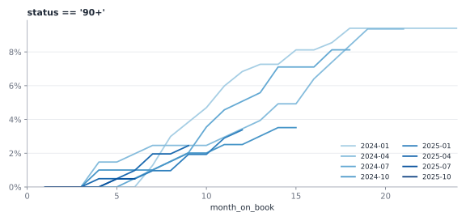
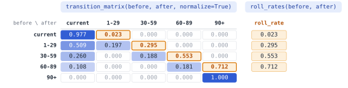

Vintage 与滚动率分析#
评分卡投入使用后，需要跟踪其批准的贷款随账龄增长的表现。 kivi.vintage 提供贷款资产组合的两种标准视角：vintage 曲线按账龄跟踪每个放款批次的坏账率；滚动率和转移矩阵展示贷款从一个月末到下一个月末在逾期档位之间的迁移。
Vintage 分析跟踪的是贷款本身，而 模型监控 和 群体稳定性指数 监控申请人， 模型验证 每年审查一次模型， 监管资本 确定其 PD 所需的资本。它的曲线和矩阵进而给出 存续期 PD 与预期信用损失 中的 PD 期限结构，那是用户指南的最后一步。 delinquency_panel() 根据贷款的还款计划和还款记录构建月度贷款面板， vintage_table() 给出 vintage 曲线， default_rate_table() 给出用于校准 PD 模型的各等级一年违约率， transition_matrix() 和 roll_rates() 给出贷款在档位之间的迁移。 migration_bandwidth() 和 migration_test() 按欧洲央行对 PD 模型验证的要求，概括并检验评级等级之间的迁移。
贷款面板#
vintage 曲线和滚动率都基于长格式的贷款面板数据，每笔贷款的每个账龄一行。示例使用 make_loan_panel() 生成的合成面板：5,000 笔分期贷款，在 2024 年 1 月至 2025 年 12 月间发放，并在每个月末观测，直到 2026 年 1 月。
>>> import numpy as np
>>> import pandas as pd
>>> from kivi.datasets import make_loan_panel
>>> panel = make_loan_panel(rng=0)
>>> panel.head(3)
loan_id cohort month month_on_book term amount balance status
0 1 2024-01 2024-02 1 24 18300.0 17621.56 current
1 1 2024-01 2024-03 2 24 18300.0 16936.33 current
2 1 2024-01 2024-04 3 24 18300.0 16244.25 current
>>> panel["status"].cat.categories.tolist()
['current', '1-29', '30-59', '60-89', '90+']
状态是逾期天数的有序分类变量，因此 panel["status"] >= "60-89" 这样的比较遵循档位的顺序。 示例数据 介绍了面板的模拟方式，下一节介绍如何根据还款计划构建这样的面板。
根据还款计划构建面板#
贷款系统记录的是每笔贷款应还的各期期款和收到的还款，而不是每个月末的状态。 delinquency_panel() 根据它们构建面板。它接受还款计划（每期期款的贷款、到期日和应还金额）和还款记录（每笔还款的贷款、日期和金额），两者都不必排序。这里有四笔贷款，每笔有三期 100 的期款，分别在 2024 年 1 月、2 月和 3 月的 15 日到期：
>>> from kivi.vintage import delinquency_panel
>>> schedule = pd.DataFrame(
... {
... "loan": np.repeat(["A", "B", "C", "D"], 3),
... "due_date": pd.to_datetime(["2024-01-15", "2024-02-15", "2024-03-15"] * 4),
... "amount_due": 100.0,
... "principal": [94.0, 96.0, 98.0] * 4,
... }
... )
>>> payments = pd.DataFrame(
... {
... "loan": ["A", "A", "A", "B", "B", "C", "C", "D", "D"],
... "date": pd.to_datetime(
... ["2024-01-15", "2024-02-15", "2024-03-14", "2024-01-15", "2024-03-20",
... "2024-01-10", "2024-03-15", "2024-01-15", "2024-02-15"]
... ),
... "amount": [100.0, 100.0, 100.0, 100.0, 200.0, 200.0, 100.0, 100.0, 99.99],
... }
... )
>>> instalments = schedule["loan"], schedule["due_date"], schedule["amount_due"]
>>> paid = payments["loan"], payments["date"], payments["amount"]
>>> book = delinquency_panel(*instalments, *paid, end="2024-06")
>>> book.drop(columns=["cohort", "month_on_book"])
loan_id month days_past_due overdue_amount outstanding status
0 A 2024-01 0 0.00 200.00 current
1 A 2024-02 0 0.00 100.00 current
2 A 2024-03 0 0.00 0.00 current
3 B 2024-01 0 0.00 200.00 current
4 B 2024-02 14 100.00 200.00 1-29
5 B 2024-03 0 0.00 0.00 current
6 C 2024-01 0 0.00 100.00 current
7 C 2024-02 0 0.00 100.00 current
8 C 2024-03 0 0.00 0.00 current
9 D 2024-01 0 0.00 200.00 current
10 D 2024-02 14 0.01 100.01 1-29
11 D 2024-03 45 100.01 100.01 30-59
12 D 2024-04 75 100.01 100.01 60-89
13 D 2024-05 106 100.01 100.01 90+
14 D 2024-06 136 100.01 100.01 90+

delinquency_panel 如何计算贷款 D 的各行。它的期款在 1 月、2 月和 3 月的 15 日到期，它在 1 月 15 日还了 100，在 2 月 15 日还了 99.99。在每个月末，截至当时的还款先还最早的期款，因此 2 月的期款还差 0.01， days_past_due 从它的到期日起算。贷款在最后一个到期日之后继续滚动，直到 end 。#
每笔贷款从首个到期日所在的月份（这里是 1 月）起，到 end 为止，每个月末都有一行。各行遵循贷后管理通常采用的规则：
还款先还最早一期未还清的期款。A 在每个到期日之前还上每一期，始终正常。B 没有还 2 月的期款，并在 3 月 20 日连同 3 月的期款一起还上：它在 2 月末逾期 14 天（从 2 月 15 日起算），在 3 月末恢复正常。
月末只计入当天或之前的还款，因此 B 在 3 月 20 日的还款在 2 月末不计入。
在期款到期之前支付的金额计入该期。C 在 1 月 10 日还了两期，因此 2 月虽然没有还款，仍为正常。
部分还款不能还清该期。D 在 2 月还了 99.99，所以它 2 月的期款还差 0.01 未还，贷款从 2 月 15 日起逾期。
在所有期款都已还清的那个月末之后，贷款离开面板，即使在最后一个到期日之前也是如此；而在最后一个到期日之后仍有拖欠的贷款会继续滚动，直到
end：D 在 6 月末逾期 136 天。make_loan_panel()也是这样处理贷款的。end之后的还款不会被使用，超出应还总额的金额也不会，例如多还的金额或贷款还清之后的还款：面板不保留贷方余额。同一天到期的期款会相加，因此因错误的连接而重复出现的还款计划行会使应还金额翻倍。构建面板之前请先去掉这类重复行。
days_past_due 统计从最早一期未还清期款的到期日到月末的天数，没有逾期时为 0；期款在到期日当天不算逾期。 status 把天数归入模拟面板的档位， overdue_amount 和 outstanding 分别是在月末之前到期的各期期款和所有期款的未还金额。 cohort 是首个到期日的前一个月， month_on_book 从它起算，因此在首个到期日所在的月份为 1，与模拟面板相同，后者的首期期款在放款一个月后到期。批次也可以改由放款日期得出，见下文的一节。
如果某笔还款所属的贷款不在还款计划中，会报错；贷款、日期或金额缺失以及金额为负时也会报错。冲正应与被冲正的还款相互抵消后再传入：
>>> delinquency_panel(*instalments, ["Z"], ["2024-01-15"], [100.0], end="2024-06")
Traceback (most recent call last):
...
ValueError: payment_loan must contain only loans of the schedule, got 'Z'
容差#
差一分钱通常不应使贷款变为逾期。 tolerance 是仍可视为已还清的最大未还金额：当某一期与之前各期合计的未还金额不超过 tolerance 时，该期算作已还清。面板中的金额保持精确，剩下的一分钱仍然欠着，因此下一笔还款会先还它。容差为 0.01 时，D 在 2 月的期款算作已还清，其逾期天数改为从 3 月的期款起算：
>>> lenient = delinquency_panel(*instalments, *paid, end="2024-06", tolerance=0.01)
>>> def days_of_d(panel):
... return panel[panel["loan_id"] == "D"].set_index("month")["days_past_due"]
>>> pd.DataFrame({"exact": days_of_d(book), "tolerance": days_of_d(lenient)})
exact tolerance
month
2024-01 0 0
2024-02 14 0
2024-03 45 16
2024-04 75 46
2024-05 106 77
2024-06 136 107
所有期款都算作已还清时，也就是未还金额合计不超过 tolerance 时，贷款离开面板。因此，与应还总额一样大的容差会让分文未还的贷款也在第一个月就离开。没有任何还款、容差为 300 时，四笔贷款各只有一行：
>>> len(delinquency_panel(*instalments, [], [], [], end="2024-06", tolerance=300.0))
4
请把 tolerance 控制在舍入误差的大小。
本金与余额#
在 principal 中给出每期期款的本金部分后，面板会增加一列 balance ，即尚未偿还的本金，与模拟面板的 balance 含义相同。一笔还款先还一期期款的利息（即应还金额减去本金），再还其本金，所以 D 差的一分钱是本金。2 月末的情况如下：
>>> with_balance = delinquency_panel(
... *instalments, *paid, end="2024-06", principal=schedule["principal"]
... )
>>> february = with_balance["month"] == "2024-02"
>>> with_balance.loc[february, ["loan_id", "outstanding", "balance"]]
loan_id outstanding balance
1 A 100.00 98.00
4 B 200.00 194.00
7 C 100.00 98.00
10 D 100.01 98.01
面板没有 weights ：它每笔贷款每个月一行，由对这些行计数的函数接受权重，例如在 vintage_table() 中使用放款金额，或在 roll_rates() 中使用余额。
批次与放款日期#
没有放款日期时，贷款的批次是其首个到期日的前一个月。当首期期款在放款一个月后到期时，这就是放款月份，但有宽限期时则不然。E 于 2024 年 1 月 20 日放款，从 2 月开始还款；F 于 1 月 5 日放款，从 4 月开始还款。两者都在到期日还上每一期，因此它们的还款计划也可以充当还款记录。按首个到期日，F 落入 3 月的批次：
>>> grace = (
... ["E", "E", "F", "F"],
... ["2024-02-20", "2024-03-20", "2024-04-05", "2024-05-05"],
... [50.0] * 4,
... )
>>> by_due_date = delinquency_panel(*grace, *grace, end="2024-05")
>>> by_due_date[["loan_id", "cohort", "month", "month_on_book"]]
loan_id cohort month month_on_book
0 E 2024-01 2024-02 1
1 E 2024-01 2024-03 2
2 F 2024-03 2024-04 1
3 F 2024-03 2024-05 2
origination 给出每笔贷款的放款日期，可以是以贷款为索引的 Series，也可以是 dict。此时批次是放款月份， month_on_book 从它起算，因此 F 与 E 同属一个批次，其第一行的账龄为 3：
>>> originated = {"E": "2024-01-20", "F": "2024-01-05"}
>>> by_origination = delinquency_panel(*grace, *grace, end="2024-05", origination=originated)
>>> by_origination[["loan_id", "cohort", "month", "month_on_book"]]
loan_id cohort month month_on_book
0 E 2024-01 2024-02 1
1 E 2024-01 2024-03 2
2 F 2024-01 2024-04 3
3 F 2024-01 2024-05 4
无论哪种方式，各行都相同；只有 cohort 和 month_on_book 会变。 vintage_table() 从批次各行的最小账龄开始观测该批次，因此所有贷款都有宽限期的批次会从更大的账龄开始，在此之前的值为 NaN。 origination 必须给出还款计划中每笔贷款的日期，首个到期日早于放款日期时会报错。
从面板到 vintage 表#
面板包含本指南其余部分所用的模拟面板中的各列，名称相同： loan_id 、 cohort 、 month 、 month_on_book 、 status ，给出 principal 时还有 balance 。因此后面各节的代码无需修改即可在它上面运行，余额滚动率也是如此。以 status 上的坏定义计算它的 vintage 表：
>>> from kivi.vintage import vintage_table
>>> vintage_table(
... book["loan_id"], book["cohort"], book["month_on_book"], book["status"] >= "30-59"
... )
month_on_book 1 2 3 4 5 6
cohort
2023-12 0.0 0.0 0.25 0.25 0.25 0.25
D 在账龄 3 进入 30-59 ，此时逾期 45 天。A、B 和 C 在账龄 3 之后离开面板，但仍留在批次中，所以比例保持为四笔贷款中的一笔。
同一个面板还说明了每笔贷款到目前为止的还款情况。加上一列指明每笔贷款的借款人后， panel_features() 就能把它变成借款人下一次申请时的评分卡特征，例如该申请所在月之前一年中的坏月数和最长连续坏月数，见 时间窗特征 中的 还款行为 一节。
月末的逾期天数#
档位按天数划分，而相邻月末之间相隔 28 到 31 天，因此贷款并不总是每月前进一个档位。1 月 31 日到期的期款在 1 月末尚未逾期，在 2 月末逾期 29 天，在 3 月末逾期 60 天，因此贷款跳过了 30-59 ：
>>> skipped = delinquency_panel(["G"], ["2024-01-31"], [100.0], [], [], [], end="2024-04")
>>> skipped[["month", "days_past_due", "status"]]
month days_past_due status
0 2024-01 0 current
1 2024-02 29 1-29
2 2024-03 60 60-89
3 2024-04 90 90+
这样的面板算出的滚动率中，会出现一个月前进两个档位的贷款；模拟面板按月数而不是天数计算，因此从不会出现这种情况。这种跳跃源于临近月初或月末的到期日。
vintage 曲线#
如果贷款在账龄 \(k\) 及之前的任一账龄为坏，就称它到账龄 \(k\) 为止 曾经为坏 （ever bad）。Vintage 表对每个批次和账龄，给出该批次贷款中到该账龄为止曾经为坏的比例。 vintage_table() 接受每一行的贷款、批次、账龄以及该贷款是否为坏，因此坏的定义就是状态上的一个条件。这里贷款一旦逾期 90 天即为坏：
>>> from kivi.vintage import vintage_table
>>> ever_90 = vintage_table(
... panel["loan_id"], panel["cohort"], panel["month_on_book"], panel["status"] == "90+"
... )
>>> ever_90[[6, 12, 18, 24]].iloc[::3].round(3)
month_on_book 6 12 18 24
cohort
2024-01 0.000 0.068 0.094 0.094
2024-04 0.020 0.034 0.084 NaN
2024-07 0.005 0.051 0.081 NaN
2024-10 0.010 0.025 NaN NaN
2025-01 0.005 0.034 NaN NaN
2025-04 0.010 NaN NaN NaN
2025-07 0.005 NaN NaN NaN
2025-10 NaN NaN NaN NaN

表中各批次的 vintage 曲线：每条曲线止于该批次最新的账龄月。#
每一行跟踪一个批次，从左到右不会递减，因为变坏过的贷款即使之后回到正常，也一直算作坏。批次尚未达到的取值为 NaN，而不是 0：2025-04 批次只观测到账龄 9，因此其账龄 12 的坏账率还不得而知。沿一列向下读，是在相同账龄上比较各批次，从而把新增放款的质量与资产组合的账龄成熟效应区分开。每个批次的最新取值则混合了二者，因为较早的批次有更长的时间变坏。
这里每个批次约有 200 笔贷款，因此一笔坏贷款就会让坏账率变动半个百分点。比较细小的差异前，应先对多个批次取平均。
坏的定义与金额#
更早的坏定义能更早给出信号。在有序状态上， >= "60-89" 统计逾期达到 60 天或更严重的贷款：
>>> ever_60 = vintage_table(
... panel["loan_id"], panel["cohort"], panel["month_on_book"], panel["status"] >= "60-89"
... )
>>> pd.DataFrame({"ever_60": ever_60[6], "ever_90": ever_90[6]}).head(4).round(3)
ever_60 ever_90
cohort
2024-01 0.021 0.000
2024-02 0.029 0.020
2024-03 0.025 0.015
2024-04 0.030 0.020
要按放款金额给每笔贷款加权，请传入 weights 。此时表中报告的是批次放款金额中属于变坏贷款的比例：
>>> by_amount = vintage_table(
... panel["loan_id"],
... panel["cohort"],
... panel["month_on_book"],
... panel["status"] == "90+",
... weights=panel["amount"],
... )
>>> by_amount[[6, 12, 18, 24]].iloc[::3].round(3)
month_on_book 6 12 18 24
cohort
2024-01 0.000 0.068 0.094 0.094
2024-04 0.026 0.035 0.091 NaN
2024-07 0.009 0.058 0.080 NaN
2024-10 0.010 0.018 NaN NaN
2025-01 0.003 0.030 NaN NaN
2025-04 0.018 NaN NaN NaN
2025-07 0.007 NaN NaN NaN
2025-10 NaN NaN NaN NaN
同一笔贷款每一行的权重必须相同，因此应传入放款金额，而不是剩余余额。
一年违约率#
Vintage 曲线从放款起跟踪贷款。IRB 模型的 PD 则指某一日期之后的一年，不论贷款的账龄，所以它的校准和验证按起点日期的队列统计违约。一个起点日期的队列由该日期未违约的债务人组成，按他们在该日期的等级分组，其一年违约率是其中在之后一年内至少违约一次的比例（EBA/GL/2017/16 第 73 至 77 段；欧洲央行验证报告说明第 2.3 节）。 default_rate_table() 从月度面板构造这些队列。模拟面板没有评级等级，所以示例把起点月的逾期档位当作零售贷款的池，把 90+ 状态当作违约：
>>> from kivi.vintage import default_rate_table
>>> rates = default_rate_table(
... panel["loan_id"], panel["month"], panel["status"], panel["status"] == "90+"
... )
>>> rates.round(4)
total event exited event_rate
start grade
2024-03 current 433 27 75 0.0624
1-29 5 3 0 0.6000
30-59 1 0 0 0.0000
2024-06 current 1009 46 194 0.0456
1-29 31 7 5 0.2258
30-59 13 12 0 0.9231
60-89 1 1 0 1.0000
2024-09 current 1557 65 281 0.0417
1-29 49 9 9 0.1837
30-59 16 9 3 0.5625
60-89 10 9 1 0.9000
2024-12 current 2146 73 413 0.0340
1-29 65 17 12 0.2615
30-59 23 16 0 0.6957
60-89 15 11 0 0.7333
起点月默认取之后十二个月都在面板内的季末；面板止于 2026 年 1 月，所以最后一个起点是 2024 年 12 月。EBA 的指引要求至少按季度计算一年违约率（第 78 段）。 total 是队列中的贷款数， event 是其中在起点之后一年内至少有一个月处于违约的，所以违约、治愈、再违约的贷款只计一次。起点时已处于违约的贷款不属于任何队列，所以表中没有 90+ 的行。等级取起点月的等级： current 池中后来逾期的贷款仍计入 current 池。用 starts 选择起点月，例如每年一个月作为不重叠窗口，或者验证报告观察期的起点；用 horizon 设定其他长度的窗口。
各起点月的平均#
观察平均违约率是各一年违约率的算术平均，按每个等级和整个校准分段计算（第 79 和 81 段）。对等级，把每个等级的违约率取平均；对分段，先把每个起点月的计数相加：
>>> rates["event_rate"].groupby(level="grade", observed=True).mean().round(4)
grade
current 0.0459
1-29 0.3178
30-59 0.5453
60-89 0.8778
Name: event_rate, dtype: float64
>>> portfolio = rates.groupby(level="start")[["total", "event"]].sum()
>>> segment_rate = portfolio["event"] / portfolio["total"]
>>> segment_rate.round(4)
start
2024-03 0.0683
2024-06 0.0626
2024-09 0.0564
2024-12 0.0520
Freq: M, dtype: float64
>>> print(f"{segment_rate.mean():.4f}")
0.0598

随着这个年轻的组合不断增长，四个起点月的一年违约率逐渐下降。它们的平均值（观察平均违约率）把每个起点月只计一次；把计数合并起来计算，则会给 2024 年末的大队列更大的权重，得到更低的比率。#
每个起点月只计一次，不论其队列有多少贷款；把所有起点月的计数加总会得到另一个数，即合并违约率。对零售敞口，指引也允许给近年更高权重的加权平均， numpy.average(segment_rate, weights=...) 。季度窗口相互重叠，所以历史中间的年份进入四个平均，两端的年份进入得少；第 80 段要求分析这一点以及所选起点月的其他偏差。
长期平均违约率是在能反映违约率可能变化范围的历史观察期上的这一平均：至少五年，并包含好年份和坏年份的代表性组合（第 82 至 84 段；巴塞尔 CRE36.79）。像这里这样一个增长中的组合的两年数据是不够的。缺少坏年份时，平均值要向上调整；坏年份过多时，可以向下调整，但调整后的值若低于两个平均值中的较大者（最近五年的平均和全部年份的平均），就需要专门论证（第 85 和 86 段）。按季度取起点月时，最近五年就是最后 20 个违约率。这些调整属于贷款机构的判断，这里不计算。长期平均就是 校准 把 PD 校准到的中心趋势， 监管资本 中的 vasicek_fit() 也由同一序列估计资产相关系数；传给它的应是不重叠窗口的违约率，每年一个起点月，因为重叠窗口会使相邻的违约率一起变动。
离开的贷款#
exited 统计一年内未违约就离开面板的队列贷款，这里大多是提前偿清的贷款。它们仍留在 total 中：指引把一年内被偿清、出售或核销的债务人，以及迁移到其他等级或模型的债务人都保留在分母中，以便计入所有这些债务人的违约（第 76 段）。生存曲线，例如 survival_table() 的 Kaplan–Meier 曲线，则把这样的贷款计为删失，贷款大量离开时给出的比率更高；在 2024 年 12 月的 current 池中，2,146 笔贷款有 413 笔离开，一年违约率为 3.40%，而 1 减 Kaplan–Meier 生存率约为 3.9%。第 76 和 80 段要求贷款机构分析离开的贷款是否使违约率产生偏差， exited 就是这一分析的起点：
>>> (rates["exited"] / rates["total"]).xs("current", level="grade").round(3)
start
2024-03 0.173
2024-06 0.192
2024-09 0.180
2024-12 0.192
Freq: M, dtype: float64
某些月份没有行的贷款，在这些月份视为未违约。因此面板应保留迁移到其他模型或方法的贷款的行，因为欧洲央行的报告也计入它们的违约。
违约与等级#
defaulted 标记贷款处于违约的月份。月末状态会漏掉在一个月内开始又结束的违约，所以应标记贷款在当月任何时候处于违约的月份，并包括违约定义中的考察期，在此期间治愈的贷款仍算作违约。去掉欧洲央行报告所排除的技术性违约，以及误记的违约（第 71 段）。对大多数组合，违约定义适用于债务人，零售组合也可以适用于债项；按相应层级的标识传入 loan 。
缺失的等级单独成一行，排在各等级之后。指引要求对起点时没有评级的债务人也计算违约率（第 75 段），而欧洲央行的报告把他们排除在客户数之外。分类型的等级保持其类别顺序，如上面的档位；其他等级排序；只对表中的等级取平均时，给 groupby 传 observed=True 。
给出 weights 时，计数是起点月各行权重之和，整数权重与重复贷款得到相同的表。权重只用于抽样：评级等级的 PD 依据按债务人计数的违约率，不允许按敞口加权（巴塞尔 CRE36.78）。 probability 增加每个队列在起点月的平均 PD mean_probability ， 模型验证 中的检验把它与违约率比较。
滚动率#
滚动率是某个月末处于某一逾期档位的贷款中，下一个月末处于下一个更差档位的比例。要把每一行与同一笔贷款账龄大一个月的那一行配对，可以把面板与平移一个月后的自身合并。贷款的最后一行没有配对行（因为贷款已还清或面板已结束），会被去掉。与在每笔贷款内部平移各行不同，无论各行如何排序、中间是否缺少某个月，合并都能配对正确的月份：
>>> from kivi.vintage import roll_rates, transition_matrix
>>> later = panel[["loan_id", "month_on_book", "status"]].assign(
... month_on_book=panel["month_on_book"] - 1
... )
>>> pairs = panel.merge(later, on=["loan_id", "month_on_book"], suffixes=("", "_next"))
>>> before, after = pairs["status"], pairs["status_next"]
>>> roll_rates(before, after).round(3)
before
current 0.023
1-29 0.295
30-59 0.553
60-89 0.712
Name: roll_rate, dtype: float64
两列都是有序分类变量，因此 roll_rates() 从其类别中获得状态从最好到最差的顺序。对于普通标签，请传入 states ：如果按排序， "current" 会排在 "90+" 之后。每个月约有 2.3% 的正常贷款漏缴期款，且继续滚动的比例随逾期天数增加：逾期 60 到 89 天的贷款中，有七成在一个月后逾期达到 90 天。
贷款每个月最多再恶化一个档位，因此四个月内从正常到 90+ 的唯一途径是每个月都滚动。如果迁移服从马尔可夫链，各滚动率的乘积就是正常贷款在四个月后处于 90+ 的比例：
>>> print(f"{roll_rates(before, after).prod():.5f}")
0.00264
余额滚动率按第一个月末的余额给每笔贷款加权，这也是损失预测的做法：
>>> roll_rates(before, after, weights=pairs["balance"]).round(3)
before
current 0.023
1-29 0.292
30-59 0.555
60-89 0.732
Name: roll_rate, dtype: float64
转移矩阵#
transition_matrix() 展示全部迁移，而不只是滚动到下一档位的部分。第 i 行、第 j 列统计从状态 i 迁移到状态 j 的贷款数：
>>> transition_matrix(before, after)
after current 1-29 30-59 60-89 90+
before
current 49436 1150 0 0 0
1-29 716 277 415 0 0
30-59 126 0 91 268 0
60-89 31 0 0 52 205
90+ 0 0 0 0 1528
设置 normalize=True 后，每一行给出该行贷款的比例，合计为 1：
>>> monthly = transition_matrix(before, after, normalize=True)
>>> monthly.round(3)
after current 1-29 30-59 60-89 90+
before
current 0.977 0.023 0.000 0.000 0.000
1-29 0.509 0.197 0.295 0.000 0.000
30-59 0.260 0.000 0.188 0.553 0.000
60-89 0.108 0.000 0.000 0.181 0.712
90+ 0.000 0.000 0.000 0.000 1.000

normalize=True 时的月度转移矩阵。紧挨对角线右侧、带边框的比例，就是 roll_rates 返回的滚动率。#
对角线是保持在原档位的贷款， current 列是回到正常的贷款，紧挨对角线右侧的取值就是滚动率。在这份数据中，到达 90+ 的贷款会一直停留在 90+，因此最后一行全部是 90+。
两个日期之间的迁移#
同一个函数可以比较同一批对象的任意两次观测，例如债务人在两次年度复评时的评级，或资产组合在两个月末的逾期档位。下面是 2025 年 6 月末和 12 月末都在账上的贷款：
>>> june = panel[panel["month"] == "2025-06"].set_index("loan_id")["status"]
>>> december = panel[panel["month"] == "2025-12"].set_index("loan_id")["status"]
>>> both = june.index.intersection(december.index)
>>> six_months = transition_matrix(june[both], december[both], normalize=True)
>>> six_months.round(3)
after current 1-29 30-59 60-89 90+
before
current 0.953 0.019 0.011 0.006 0.011
1-29 0.775 0.034 0.000 0.000 0.191
30-59 0.211 0.000 0.000 0.000 0.789
60-89 0.150 0.000 0.000 0.000 0.850
90+ 0.000 0.000 0.000 0.000 1.000
这里只比较两个月末都在账上的贷款。期间还清的 226 笔贷款（6 月时几乎都是正常状态）被去掉了，因此 current 行描述的是仍在账上的贷款。缺失值会引发错误，而不会被计入，因此请先决定如何处理只被观测到一次的对象：像这里一样删除，或者给它们一个单独的状态，例如 "closed" ，使它们保留在比例中。
如果月度迁移服从时齐马尔可夫链，月度矩阵的六次幂就会给出六个月的矩阵。比较最终处于 90+ 的比例，可以看出这一假设在多大程度上成立：
>>> projected = np.linalg.matrix_power(monthly.to_numpy(), 6)
>>> pd.DataFrame({"projected": projected[:, -1], "observed": six_months["90+"]}).round(3)
projected observed
before
current 0.011 0.011
1-29 0.218 0.191
30-59 0.592 0.789
60-89 0.869 0.850
90+ 1.000 1.000
推算值的量级正确，但并不精确：贷款的风险各不相同，且漏缴期款的概率取决于账龄，因此迁移并不是时齐马尔可夫链。6 月逾期 30 到 89 天的贷款很少，因此这些行本身也不确定。
迁移检验#
如果大多数客户一年后仍保持原等级，而迁移的客户也迁移得不远，评级体系就是稳定的。欧洲央行要求对 PD 模型的迁移矩阵给出两种概括。数据是每个客户在观察期开始时的等级和结束时的状态：一个等级，或者对离开这些等级的客户使用 "default" 、 "closed" 等标签。这里五个等级（从最好的 A 到 E）中的 2,200 个客户按一个模拟的迁移矩阵迁移一年：
>>> rng = np.random.default_rng(0)
>>> grades = ["A", "B", "C", "D", "E"]
>>> statuses = grades + ["default", "closed"]
>>> yearly = np.array([
... [0.86, 0.07, 0.02, 0.01, 0.00, 0.00, 0.04],
... [0.06, 0.80, 0.06, 0.01, 0.03, 0.01, 0.03],
... [0.01, 0.07, 0.78, 0.07, 0.02, 0.02, 0.03],
... [0.00, 0.01, 0.08, 0.76, 0.08, 0.04, 0.03],
... [0.00, 0.00, 0.02, 0.09, 0.73, 0.13, 0.03],
... ])
>>> counts = [300, 600, 700, 400, 200]
>>> start = np.repeat(grades, counts)
>>> end = np.concatenate([
... rng.choice(statuses, size=count, p=row) for count, row in zip(counts, yearly)
... ])
>>> transition_matrix(start, end, states=statuses, normalize=True).loc[grades].round(3)
after A B C D E default closed
before
A 0.807 0.093 0.027 0.013 0.000 0.000 0.060
B 0.045 0.835 0.057 0.008 0.020 0.003 0.032
C 0.014 0.084 0.761 0.071 0.019 0.020 0.030
D 0.000 0.020 0.080 0.772 0.060 0.045 0.022
E 0.000 0.000 0.015 0.145 0.660 0.140 0.040
模拟所用的矩阵把等级 B 的客户更多地送到等级 E 而不是等级 D，稳定的评级体系不应出现这样的跳跃。
迁移带宽#
把等级从 1 编号到 \(K\) ，设有 \(N_{ij}\) 个客户从等级 \(i\) 迁到等级 \(j\) 。上矩阵加权带宽（MWB）把迁往较差等级（对角线以上）的客户的迁移距离相加，再除以从每个客户的等级向任一方向迁移的最远距离之和：
下 MWB 对迁往较好等级（对角线以下）的客户做同样的计算。二者都在 0 与 1 之间，值越小说明迁移越短。 migration_bandwidth() 在 grades 中接受从最好到最差排列的等级；违约或离开的客户不影响两个带宽：
>>> from kivi.vintage import migration_bandwidth, migration_test
>>> migration_bandwidth(start, end, grades=grades).round(4)
statistic
upper 0.4618
lower 0.4047
dtype: float64
从中间的等级 C 最远可迁移两个等级，从等级 A 最远可迁移四个等级，因此迁移一个等级，在 C 中占最远距离的一半，在 A 中只占四分之一。最远距离按任一方向计算，因此从等级 B 上调一个等级（这已是 B 能上调的最远距离），也要以 B 可能下调的三个等级来衡量。
迁移矩阵的单调性#
在矩阵的每一行中，比例应当随着远离对角线而下降。 migration_test() 把每个非对角比例 \(p_{ij}\) 与其靠近对角线的相邻单元格的比例 \(p_{in}\) 相比较：对角线以上为 \(n = j - 1\) ，对角线以下为 \(n = j + 1\) 。设期初在等级 \(i\) 的客户有 \(N_i\) 个（包括违约或离开的客户），则
p 值为 \(\Phi(z_{ij})\) 。p 值较小说明该单元格的客户多于其相邻单元格。这里只有从 B 到 E 的跳跃比较突出：
>>> migration = migration_test(start, end, grades=grades)
>>> migration.loc["B"].round(4)
total share statistic p_value
after
A 600 0.0450 38.2532 1.0000
C 600 0.0567 35.6584 1.0000
D 600 0.0083 4.7295 1.0000
E 600 0.0200 -1.7018 0.0444
>>> migration[migration["p_value"] < 0.05].round(4)
total share statistic p_value
before after
B E 600 0.02 -1.7018 0.0444

migration_test 如何计算从 B 到 E 的单元格的统计量。等级 B 的 600 个客户中有 2.0% 迁往等级 E，但只有 0.8% 迁往其靠近对角线的相邻等级 D，因此统计量为负，p 值较小。违约或销户的客户只计入总数 N_B 。#
total 统计期初在该等级的所有客户，因此有客户违约或离开时，一行中各比例之和小于 1。紧邻对角线的单元格与对角线比较，因此其统计量很大。检验无定义时统计量为 NaN，例如从 E 到 A 的单元格，它和相邻单元格的比例都为 0：
>>> migration.loc[("E", "A")]
total 200.0
share 0.0
statistic NaN
p_value NaN
Name: (E, A), dtype: float64
表中 20 个非对角单元格各占一行，因此仅凭随机波动就会有一些 p 值低于 5%；要结合单元格的大小来看较小的 p 值。使用 weights 时，计数为权重之和，整数权重与重复相应行的结果相同。检验把权重视为客户数，因此敞口等权重得到的统计量并不服从标准正态分布。